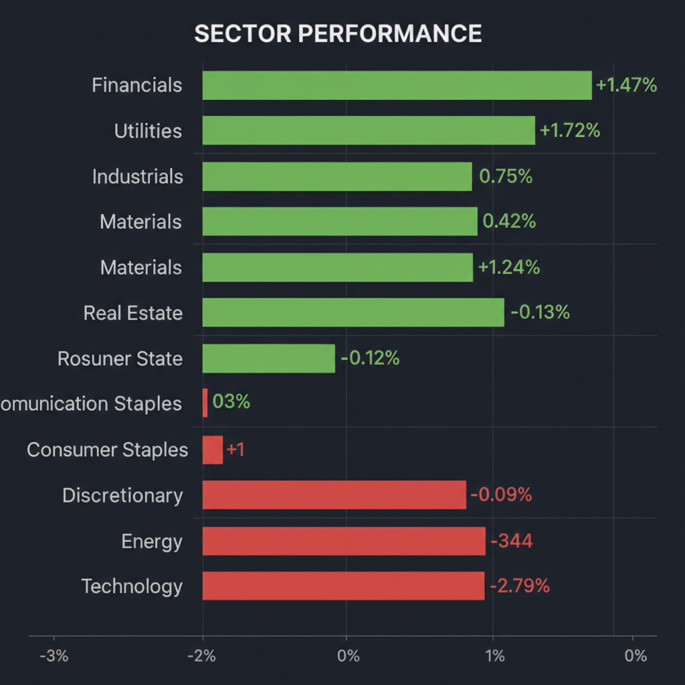
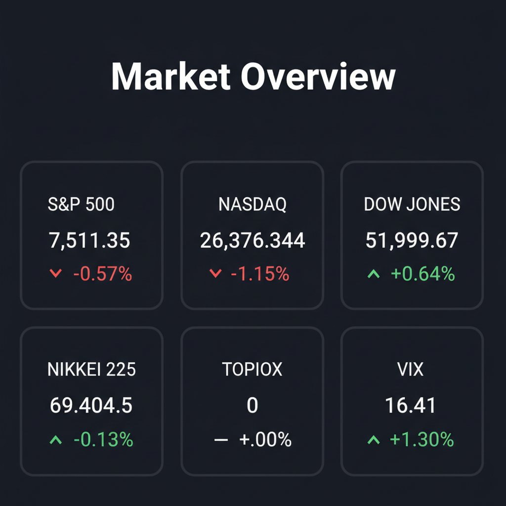

投資チームの合議による最終投資レポートを以下の通り報告します。
各エージェントがWeb調査結果を踏まえて独立に10段階評価した結果です。平均7以上=強気、4〜6.9=中立、4未満=弱気。
| 銘柄 | ファンダメンタルズアナリスト | テンバガーハンター | マクロエコノミスト | テクニカルストラテジスト | リスクマネージャー | 平均 | 判定 |
| ELI | 9 圧倒的需要、AI創薬、成長と収益性両立 | 9 減量薬とパイプライン、圧倒的成長力で買い。 | 9 時価総額1兆ドル超、高成長持続期待 | 9 圧倒的需要とパイプラインで成長継続 | 9 AI創薬と肥満症薬で圧倒的成長、PER高値も妥当 |
9 | 強気 |
| DATABRICKS | 8 非上場だがAI市場独占、IPO期待大 | 9 AIプラットフォームのリーダー、IPO待機。 | 8 非上場だがAI成長牽引、IPO期待高まる | 7 非上場だがAI市場で圧倒的成長性 | 8 非上場だがAIプラットフォームで高成長、IPO待ち |
8 | 強気 |
| EQUINOR | 7 業績堅調、株主還元強化、エネルギー高を背景に | 6 自社株買い増額は魅力、地政学リスク依存は懸念。 | 5 増配・自社株買いは好感も原油価格リスク残る | 6 増配・自社株買い強化も地政学リスク残存 | 5 地政学リスク依存、株主還元強化は評価 |
5.8 | 中立 |
| GO | 5 IPO直後、自動運転リスク、様子見 | 4 IPO直後、自動運転リスクと不透明感。 | 4 IPO直後、自動運転リスクとボラティリティ懸念 | 5 IPO直後、自動運転リスク注視 | 4 IPO直後、自動運転リスク大きくボラティリティ警戒 |
4.4 | 中立 |
| SPCE | 2 キャッシュバーン深刻、上場リスク大 | 1 キャッシュバーン大、商業化遅延、売却推奨。 | 2 キャッシュバーン継続、商業化不透明 | 2 キャッシュバーン深刻、商業化不透明 | 1 キャッシュバーン深刻、商業化遅延で倒産リスク |
1.6 | 弱気 |
エージェントが推奨した中小型株について、Google検索で最新情報を調査した結果です。
Equinorに関する投資判断に必要な最新情報を以下にまとめます。
直近の四半期決算（TradingViewの情報では詳細な日付は不明ですが、上記第1四半期決算と合致する可能性が高い）では、1株当たり利益は14.34ノルウェークローネで、予想を45.60%上回りました。売上高は予想2,770.2億ノルウェークローネに対し、2,698.5億ノルウェークローネでした。
2025年通期の売上成長率は2.6%で、2024年通期の-3.2%、2023年通期の-28.9%と比較して改善傾向にあります。
免責事項: これは投資判断を促すものではなく、提供された情報に基づいてまとめたものです。投資にはリスクが伴います。
「ELI」という銘柄について調査した結果、ティッカーシンボル「ELI」はベルギーの送電系統運用会社であるElia Group SAを指しますが、提供された情報と一般的な市場での注目度から、質問は米国の製薬大手であるEli Lilly and Company（ティッカーシンボル：LLY）に関するものと判断し、Eli Lilly and Companyの情報を以下にまとめます。
Eli Lilly and Company (LLY) 投資判断に必要な最新情報
1. 企業概要 * 事業内容: Eli Lilly and Companyは、米国、欧州、中国、日本、その他国際的にヒト用医薬品の発見、開発、製造、販売を行っています。循環器代謝疾患、がん、免疫学、神経科学の分野に注力しており、主要製品には糖尿病・肥満症治療薬の「Mounjaro」と「Zepbound」、がん治療薬の「Verzenio」と「Jaypirca」、免疫疾患治療薬の「Taltz」と「Olumiant」、片頭痛治療薬の「Emgality」、アルツハイマー病治療薬の「Kisubla」などがあります。 * 時価総額: 2026年6月現在、Eli Lillyの時価総額は約1.01兆米ドルであり、製薬企業としては史上初めて1兆ドルに達しました。これにより、世界で16番目に価値のある企業となっています。 * 業界でのポジション: 世界有数の大手製薬会社の一つであり、多様な製品ポートフォリオと堅固なパイプラインを誇ります。特に、肥満症治療薬分野における強力なリーダーシップが業界を牽引する成長可能性を支えています。
2. 直近の業績・決算情報 * 売上: 2026年3月31日までの過去12ヶ月間の売上高は722億ドルでした。2026年第1四半期の売上高は198億ドルで、市場予想を上回りました。 * 利益: 2026年第1四半期の1株当たり利益（EPS）は8.55ドルで、予想を上回りました。直近四半期の純利益は73.96億ドルでした。2025年の純利益は206.4億ドルでした。 * 成長率: 2026年第1四半期の売上高は前年同期比で55%を超える成長を記録し、「Mounjaro」と「Zepbound」の売上が主な牽引役となりました。循環器代謝ポートフォリオは前年同期比56%の成長を示しています。希薄化後EPSの過去12ヶ月間の成長率は129.06%です。今後5年間の年間複合成長率（CAGR）は、売上が15%、営業利益が23%、純利益が17%と予測されています。
3. 最新ニュース・材料（直近1-2週間） * 2026年6月16日：非オピオイド鎮痛剤候補の経口MNK阻害剤のパイプラインを持つ4E Therapeuticsを買収し、M&A活動を継続しています。 * 2026年6月14日：Jaypirca（ピルトブルチニブ）をベネトクラクス併用療法に追加することで、再発・難治性慢性リンパ性白血病（CLL/SLL）患者の病勢進行または死亡のリスクを45%有意に低減したと発表しました。 * 2026年6月13日：2026年のEHA年次総会で、骨髄線維症患者を対象としたファーストインクラスのII型JAK2阻害剤の初期臨床データを発表する予定です。 * 2026年5月27日：製薬会社として初めて時価総額1兆ドルを達成しました。 * 最近のニュースでは、「Mounjaro」や「Zepbound」といった減量薬への需要の高さが継続していることや、同社の幅広いイノベーション戦略が強調されています。
4. アナリスト評価・目標株価 * アナリストコンセンサス評価: 19～28人のアナリストに基づくコンセンサス評価は「Strong Buy」（強力買い）です。 * 平均目標株価: アナリストの平均12ヶ月目標株価は、1,176.11ドルから1,266.21ドルの範囲で、最高値は1,500.00ドル、最低値は830.00ドルから850.00ドルです。これは現在の株価から約10.89%から17.61%の潜在的な上昇余地を示唆しています。 * 直近では、2026年6月にJefferiesが目標株価を1,350ドルに引き上げ、B of A Securitiesが1,251ドル（旧1,133ドル）、Barclaysが1,400ドルに引き上げました。
5. リスク要因 * 競合: 肥満症治療薬市場の活況により、Novo Nordiskなどの競合他社との激しい競争に直面しています。また、いくつかの医薬品の特許切れや、米国の糖尿病治療薬部門における価格圧力の増大も課題です。 * 規制: FDAの新しいファストトラック医薬品プログラムを巡る法的問題が存在します。 * 財務上の懸念: 現在の株価はPER（株価収益率）が予想利益の約30倍であり、製薬業界平均の18倍と比較して割高感があります。2025年10月時点での有利子負債比率（Debt/Equity）は139.02%です。
6. 株価の最近の動き * 直近のトレンド: Eli Lillyの株価は、2026年5月27日に1株1,000ドルを超え、過去最高値を更新し、時価総額1兆ドルを達成した初の製薬会社となりました。 * 現在の株価: 2026年6月15日時点の終値は1,129.35ドルです。 * 52週レンジ: 623.78ドルから1,182.73ドルの間で推移しています。 * パフォーマンス: 過去1ヶ月で12.38%上昇、過去3ヶ月で21.39%上昇、過去1年間で39.84%上昇と、堅調な推移を見せています（2026年6月15日時点）。過去1年間で株価は大幅に上昇しています。
銘柄「GO」について、日本のタクシー配車アプリ大手であるGO株式会社（証券コード: 581A）に関する投資判断に必要な最新情報をまとめました。
GO株式会社（581A）の投資判断に必要な最新情報
1. 企業概要 GO株式会社は、「移動で人を幸せに。」をミッションに掲げ、タクシー配車アプリを軸としたモビリティ関連事業を展開しています。日本のモビリティプラットフォーム、モビリティインフラとなることを目指しています。 * 事業内容: タクシー配車システムの提供など、モビリティ関連事業。 * 時価総額: 2026年6月16日の上場初日の終値ベースで約2,050億円です。公開価格ベースでの上場時価総額は1,864億円でした。 * 業界でのポジション: 全国約8.5万台のタクシーネットワークと累計3,500万ダウンロードを誇り、月間平均利用回数では国内シェアNo.1のタクシー配車サービスを提供しています。
2. 直近の業績・決算情報 * 2025年5月期の業績予想: 売上高は前期比29.8%増の408.0億円、経常利益は同2.5倍の67.0億円、純利益は前期比3倍の64億円を見込んでおり、順調な増収増益を予測しています。
3. 最新ニュース・材料（直近1-2週間） * 新規上場: 2026年6月16日に東京証券取引所グロース市場に新規上場しました。 * 初値: 公開価格2,400円に対し、初値は21.3%高の2,910円をつけました。 * 資金使途: 上場により調達した資金は、自動運転タクシーの研究開発に充当する計画です。 * 経営体制: 上場日に独立役員届出書やコーポレート・ガバナンスに関する報告書など、経営体制に関する適時開示情報が公開されています。 * 筆頭株主の恩恵: 共同筆頭株主であるDeNAは、今回のIPOで含み益が顕在化すると報じられています。
4. アナリスト評価・目標株価 IPO直後であるため、具体的なアナリスト評価や目標株価はまだ限定的です。IPO時の市場の注目度は「最高☆5つ」と評価されており、類似企業と比較して公開価格は割安と判断する分析もありました。
5. リスク要因 * 将来の成長戦略: 今後の成長の柱として自動運転タクシーの事業化を位置付けていますが、これは技術開発や法整備など不確実性を伴います。 * 競争と規制: 日本のモビリティプラットフォームを目指す中で、競合の動向やタクシー業界に関する規制環境の変化が事業に影響を与える可能性があります。
6. 株価の最近の動き * 上場初日: 2026年6月16日に東証グロース市場に上場し、初値は公開価格2,400円を21.3%上回る2,910円でした。 * 値動き: 上場初日の高値は2,948円、安値は2,525円で、終値は2,640円でした。
ヴァージン・ギャラクティック・ホールディングス（SPCE）に関する最新情報を以下にまとめます。
1. 企業概要 ヴァージン・ギャラクティック・ホールディングスは、個人、研究者、政府機関向けに宇宙へのアクセスを提供する航空宇宙および宇宙旅行会社です。事業内容には、宇宙飛行システム車両の設計・開発、製造、地上・飛行試験、および飛行後メンテナンスが含まれます。 2026年6月時点での時価総額は約0.22億ドルから0.39億ドルと変動しています。 2026年6月12日時点では約3.839億ドルでした。 宇宙旅行業界では、ブルーオリジンやスペースXと並ぶ主要な企業の1つです。 2023年6月より商業宇宙旅行を開始しており、約800人が予約済みです。
2. 直近の業績・決算情報（2026年第1四半期決算） 2026年5月14日に発表された2026年第1四半期決算は以下の通りです。 * 売上高: 0.2百万ドル（前年同期の0.5百万ドルから減少） これは将来の宇宙飛行士アクセス料によるものです。 * 純損失: 6,500万ドル（前年同期の8,400万ドルの損失から改善） 主に営業費用の削減によるものです。 * 営業費用: 6,600万ドル（前年同期の8,900万ドルから26%減少） * フリーキャッシュフロー: マイナス9,300万ドル（前年同期のマイナス1億2,100万ドルから改善） * 現金残高: 2億5,100万ドル（2026年3月31日時点） * 調整後EBITDA: マイナス5,500万ドル（前年同期のマイナス7,200万ドルから改善）
同社は現在も商業宇宙飛行サービスのプレ運用段階にあり、収益は限定的です。 しかし、デルタ級宇宙船の開発進捗や債務管理の取り組みは評価されています。 第3四半期に飛行試験を開始し、第4四半期に商業宇宙飛行を開始する予定です。
3. 最新ニュース・材料（直近1-2週間） * 2026年6月15日、ヴァージン・ギャラクティックのオプション取引が活況であり、取引高が15.8万枚、未決済建玉が101.79万枚に達しました。Cboeのデータによると、投資家心理は混在しており、株価は3.71%下落しています。 * 2026年6月上旬、SpaceXのIPOが宇宙関連株に影響を与え、ヴァージン・ギャラクティックの株価は30%以上下落しました。 * 2026年5月29日、同社が株式発行を通じて資金調達を行い、長期インセンティブ計画が株主によって承認されたとのニュースがありました。 * 2026年5月29日、短期間で株価が44%急騰したと報じられ、ボラティリティの高さが示されています。 * 2026年5月下旬には、SpaceXの歴史的なIPOが宇宙関連株全般の熱狂を後押しし、ヴァージン・ギャラクティックも好決算を受け急騰しました。
4. アナリスト評価・目標株価 アナリストのコンセンサス評価は「中立（Hold）」または「売り」が多く見られます。 * 複数のアナリストの平均目標株価は、2.95ドルから6.23ドルと幅があります。 * 2026年6月13日時点でのアナリスト平均目標株価は3.55ドルで、現在の株価から約-9.21%の下降が予想されています。 * 22%のアナリストが「強気買い」、55%が「中立」、22%が「強気売り」と評価しています。 * Susquehannaは2026年4月10日に目標株価を3.00ドル、Jefferiesは2026年4月2日に5.00ドル、Morgan Stanleyは2025年12月12日に3.00ドルと設定しています。 * MarketBeatによると、6人のアナリストの12ヶ月の平均目標株価は3.33ドルで、現在の株価3.32ドルから0.24%の上昇を予測しています。
5. リスク要因 * 財務上の懸念: 商業飛行開始前の段階であり、依然として多額のキャッシュを消費しています（キャッシュバーン）。 * 競合: SpaceXやBlue Originといった競合他社が存在し、市場の競争は激しいです。 特にSpaceXのIPOは市場の資金と注目を吸収し、ヴァージン・ギャラクティックの株価に影響を与えました。 * 規制・安全性: 宇宙旅行にはシステム障害、乱気流、緊急シナリオなどのリスクが存在します。規制機関による安全性認証の取得や、安全性の確保が重要です。 過去にはテスト飛行で機体の問題や飛行ルートからの逸脱などが報じられたこともあります。 * デルタ級宇宙船の開発: 商業運航の中心となるデルタ級宇宙船の開発が計画通りに進むかどうかが、最大の懸念事項です。 過去のパフォーマンスを考慮すると、新宇宙機を予定通りに建造・納入し、商業飛行を開始できるかについては懐疑的な見方もあります。
6. 株価の最近の動き（直近のトレンド） * 2026年6月12日時点での株価は3.91ドルでした。 2026年6月15日には3.56ドルで取引されています。 * 過去30日間で時価総額は250.96%増加し、過去12ヶ月では94.05%増加しています。 * 2026年に入ってから年初来で2.8%上昇、過去52週間では7.84%上昇しています。 * 2026年6月1日までの5営業日で株価が125%上昇し、8.90ドルの高値を付けました。これは2026年第1四半期決算が市場予想を上回ったことや、新たな戦略的投資家の報道が背景にあります。 * しかし、SpaceXのIPO後には30%以上下落する局面もありました。 * 52週高値は2026年6月1日の8.90ドル、52週安値は2026年3月30日の2.13ドルです。 * テクニカル分析では、RSI、STOCH、MACD、ADX、CCIなどの指標から「買い」や「中立」のシグナルが出ています。
Databricksに関する投資判断に必要な最新情報を以下にまとめます。
同社は、データエンジニアリング、データサイエンス/機械学習、データ分析の領域に強みを持ち、AIおよび機械学習向けの統合データ・アナリティクス・プラットフォーム「レイクハウス・プラットフォーム」を提供しています。レイクハウス・アーキテクチャは、データレイクの柔軟性とコスト効率、スケーラビリティと、データウェアハウスのデータ管理機能、ACIDトランザクションの信頼性を両立させることが特徴です。
Databricksは非上場企業ですが、最新の資金調達ラウンドでは1,340億ドル（約20.9兆円）の評価額に達しています。2026年6月1日時点での推定株価は210.73ドル、Forge Priceでは242.04ドル/株とされています。業界においては、ガートナーの「マジッククアドラント」において、データサイエンスおよび機械学習プラットフォーム部門のリーダーとして評価されており、データとAI基盤を牽引する存在として、Snowflakeなどの競合他社と比較しても優位性を示しています。世界中で15,000社以上の企業（フォーチュン500企業の60%以上を含む）がDatabricksデータインテリジェンスプラットフォームを利用しています。
* 評価額のトレンド: * 2025年12月16日: シリーズL資金調達により、評価額1,340億ドルで40億ドル超を調達。 * 2026年2月10日: 総額70億ドル超の追加投資を完了し、企業評価額は1,340億ドルに達しました。 * 2026年6月9日: The Informationの報道によると、1,650億ドルから1,750億ドルの評価額を目指す新たなプライベート資金調達ラウンドを協議中とされています。 * プライベート市場での取引価格: * 2026年6月1日時点でのNasdaq Private Marketによる推定株価は210.73ドル/株。 * 2026年6月16日時点でのForge Priceは242.04ドル/株とされています。 * パフォーマンス: 過去90日間で、プライベート市場での株式は+11.21%のリターンを示し、86.5億ドルの二次市場での入札、オファー、取引活動がありました。
全体として、DatabricksはデータとAI市場の成長を背景に、高い成長率と評価額の上昇を維持しており、IPOも視野に入れているものの、現時点では慎重な姿勢を示しています。